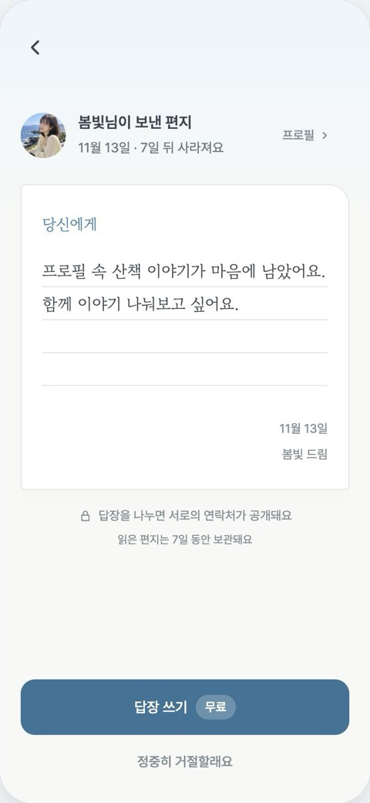
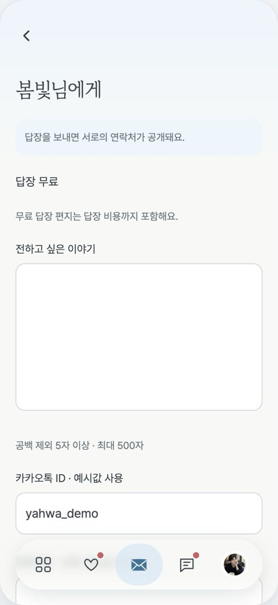
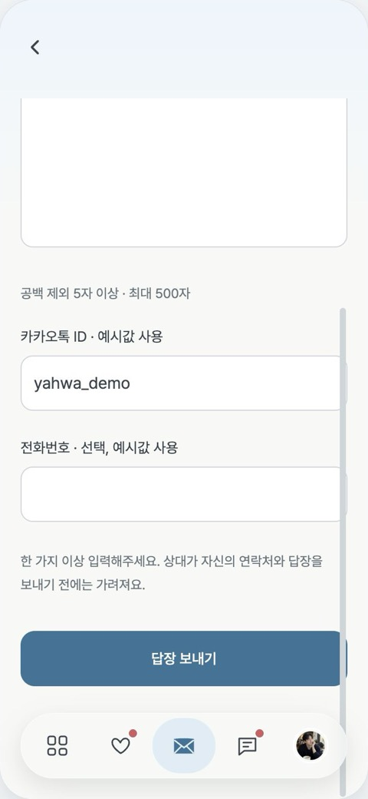
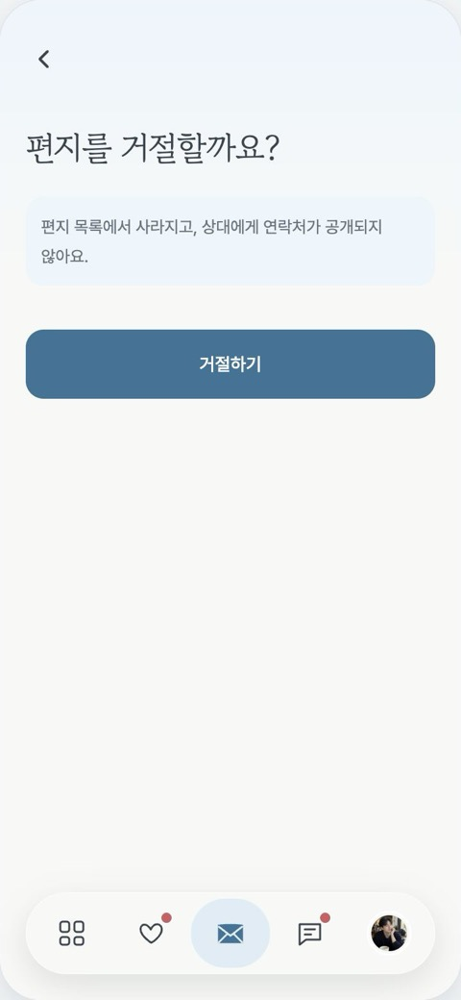

편지 답장 쓰기 · 거절 개선안
받은 편지는 줄 쳐진 편지지인데, 답장을 쓰는 곳은 회색 입력 상자라서 편지에 답하는 느낌이 끊겨요. 답장도 받은 편지와 같은 편지지에 쓰고 그 아래에 연락처 칸을 두었어요. 거절 화면은 무엇이 일어나는지 분명히 보여 주는 쪽으로 정리했어요.
지금




답장 쓰기
- 편지지가 이어지지 않아요. 받은 편지는 줄, 고운바탕, “당신에게”, “드림”이 있는 종이인데 답장은 빈 입력 상자예요. 편지에 답하는 게 아니라 서류를 채우는 느낌이에요.
- 답할 편지가 안 보여요. 쓰는 동안 상대 편지를 다시 보려면 뒤로 나가야 해요.
- 필요 없는 안내가 있어요. “답장 무료”가 제목처럼 떠 있고, “무료 답장 편지는 답장 비용까지 포함해요”는 보내는 사람에게만 맞는 말이에요.
- 쓰는 화면에 아래 탭 막대가 남아 있어요. 막대가 연락처 칸을 가리고, 보내기 버튼은 맨 아래까지 내려야 보여요. 받은 편지 화면은 탭 막대 대신 답장 버튼을 두고 있어서 흐름도 달라져요.
- 스크롤 막대가 입력칸 오른쪽을 잘라요 (세 번째 화면 오른쪽 끝).
거절
- 누구의 편지인지 안 보여요. 제목과 안내 한 줄뿐이라 무엇을 거절하는지 다시 확인할 수 없어요.
- 되돌릴 수 없는 선택이 가장 강한 버튼이에요. 거절이 답장 보내기와 같은 파란 큰 버튼이고, 취소는 뒤로 가기뿐이에요.
- 말투가 갑자기 딱딱해져요. 들어올 때는 “정중히 거절할래요”였는데 여기서는 “거절하기”예요.
- 확인 한 번에 화면 한 장을 써요. 답장에 리프가 들 때는 아래에서 올라오는 확인 창을 쓰는데, 거절만 따로 화면으로 넘어가요.
답장 쓰기
편지지는 그대로, 아래에 연락처
 봄빛님에게 보내는 답장11월 13일 받은 편지 · 7일 뒤 사라져요
봄빛님에게 보내는 답장11월 13일 받은 편지 · 7일 뒤 사라져요답장을 보내면 서로의 연락처가 공개돼요
둘 중 하나는 적어 주세요.
처음 열었을 때 · 직접 써 볼 수 있어요
봄빛님에게 보내는 답장11월 13일 받은 편지 · 7일 뒤 사라져요저도 산책을 좋아해요. 요즘은 저녁에 강가를 자주 걸어요. 같이 걸으면서 이야기 나눠요.
답장을 보내면 서로의 연락처가 공개돼요
둘 중 하나는 적어 주세요.
쓰고 난 뒤
쓰는 곳이 받은 편지와 같은 편지지예요. 모서리(4·20·4·4), 테두리, 줄 간격 32, 줄 색, 글꼴 16이 받은 편지 카드와 같아요. 맨 위 “봄빛님에게”, 아래 날짜와 “나 드림”까지 똑같이 붙어요. 글이 길어지면 편지지가 줄 단위로 늘어나요.
위에는 누구에게 쓰는지만. 받은 편지 화면 맨 위의 보낸 사람 줄과 같은 모양으로 “봄빛님에게 보내는 답장”을 두고, 큰 제목 “봄빛님에게”는 편지지 안으로 들어가요.
편지지 아래는 연락처 칸. 자물쇠 한 줄로 “답장을 보내면 서로의 연락처가 공개돼요”를 알리고, 카카오톡 ID와 전화번호(선택) 칸을 지금처럼 라벨 위·칸 아래로 둬요.
지운 것. “답장 무료”, “무료 답장 편지는…”, 위쪽 안내 상자, “공백 제외 5자 이상 · 최대 500자” 줄. 가격은 버튼 안 “무료”로, 글자 수는 편지지 왼쪽 아래로 옮겼어요.
보내기 버튼은 아래에 고정. 쓰는 동안 아래 탭 막대를 숨기고, 받은 편지 화면과 같은 자리에 “답장 보내기 · 무료”를 둬요. 5자 전에는 꺼져 있고 남은 글자를 편지지 안에서 알려 줘요.
거절
두 안 모두 누구의 편지인지 보여 주고, 거절 버튼은 파란 강조색 대신 차분한 진한 색으로 바꿨어요. 거절 뒤에는 편지 목록으로 돌아가며 “편지를 정중히 거절했어요” 알림을 띄워요 (지금은 알림 없이 넘어가요).
D1 · 편지 위에서 확인 창으로 추천
봄빛님이 보낸 편지11월 13일 · 7일 뒤 사라져요프로필 속 산책 이야기가 마음에 남았어요. 함께 이야기 나눠보고 싶어요.
답장을 나누면 서로의 연락처가 공개돼요
편지를 정중히 거절했어요
봄빛님의 편지를 정중히 거절할까요?
봄빛님이 보낸 편지 · 11월 13일프로필 속 산책 이야기가 마음에 남았어요.
- 편지 목록에서 사라지고, 다시 열어 볼 수 없어요.
- 서로의 연락처는 공개되지 않아요.
“정중히 거절하기”를 누르면 알림까지 볼 수 있어요
화면을 넘기지 않고 편지 위에서 물어요. 받은 편지 화면의 “정중히 거절할래요”를 누르면 아래에서 확인 창이 올라와요. 리프가 드는 답장을 확인하는 창과 같은 모양이라 두 선택이 같은 무게로 보여요.
무엇을 거절하는지 다시 보여 줘요. 보낸 사람 사진, 날짜, 편지 첫 줄을 확인 창 안에 넣었어요.
거절하면 무엇이 달라지는지 두 줄로. 목록에서 사라지고 다시 열 수 없다는 것, 연락처가 공개되지 않는다는 것. 지금 앱이 실제로 하는 일만 적었어요.
버튼 무게를 바꿔요. 취소를 왼쪽 회색, 거절을 오른쪽 진한 회색으로 두었어요. 파란 강조색은 답장 보내기에만 남겨서 “다음으로 할 일”이 늘 같은 색이에요. 문구도 들어올 때와 같이 “정중히”를 이어요.
D2 · 거절 화면은 두되 내용을 채우기 화면 유지
편지를 정중히
거절할까요?
프로필 속 산책 이야기가 마음에 남았어요. 함께 이야기 나눠보고 싶어요.
거절하면
- 편지 목록에서 사라지고, 다시 열어 볼 수 없어요.
- 서로의 연락처는 공개되지 않아요.
지금 화면 구조는 그대로 두고 빈 곳을 채워요. 거절할 편지를 작은 편지지로 다시 보여 주고, 거절하면 생기는 일을 하늘색 상자에 정리했어요.
버튼은 아래에 고정해요. 받은 편지 화면과 같은 자리에 “정중히 거절하기”(진한 회색)와 “편지로 돌아가기” 글자 버튼을 두고, 아래 탭 막대는 숨겨요.
D1과 비교하면 거절이 더 신중한 단계로 느껴지지만, 확인 한 번에 화면을 하나 더 넘겨요. 리프 확인 창과 모양이 달라지는 점은 지금과 같아요.
적용하면 바뀌는 곳
- 답장 쓰기 화면(
features.js의compose-letter)의 입력 상자를 편지지로 바꾸고, 편지지 모양은 읽는 편지의.letter-paper값을 같이 써요. 처음 보내는 편지 쓰기 화면도 같은 렌더를 쓰니 함께 편지지가 돼요 (편지 종류 고르기는 그대로 둠). - 쓰는 동안 아래 탭 막대를 숨기고 보내기 버튼을 아래에 고정해요. 스크롤 막대는 숨겨서 입력칸이 잘리지 않게 해요.
- 거절은 D1이면 확인 창(
yhSheet)으로, D2면 지금letter-decline화면을 채워요. 거절 뒤 알림 한 줄을 더해요. - B 테마는 같은 구조에 B 색·글꼴·모서리가 그대로 입혀져요. 위에서 B로 바꿔 확인할 수 있어요.